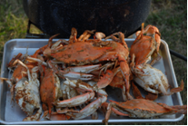
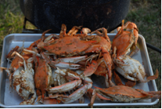

The Grieb Site (18KE83) Kent County
August 14 – 18, 2008
ASM’s call for volunteers, in the August 2008 ASM Ink newsletter and their web site, rallied dozens of volunteers and professionals, guaranteeing success for the short field session. We not only recorded all four extant walls within the cellar but we opened numerous units surrounding the cellar. Further analysis is needed before we can determine what the recorded features are telling us, but the artifacts recovered from the screens parallel those of Bill Grieb’s original collection. A second area just north of the cellar produced possible signs (post molds) of a second slightly later building. All of the material recorded and recovered from the site during the session has been taken to the MHT laboratory in Crownsville where they are to be processed. Starting on Thursday, September 4, 2008 there will be lab opportunities for volunteers and CAT candidates every Tuesday and Thursday, between 10:00 am and 3:00 pm. For more information call or email Bruce F. Thompson at 410.514.7663 or bthompson@mdp.state.md.us.
The 17th Century Plantation Project was further buoyed by a relatively new ASM program called the Archaeological Site Survey & Registration Program. Special thanks goes out to the Program’s Facilitator, John Newton, Director, Charlie Hall and Coordinator, Dana Linck.

Charlie and Bruce discuss with Maureen, Dennis, Paul and Bill, where to place units across the northern-most depression.
Like all ASM field scenes - the screens remained in constant motion over the five-day session.

In the background and to the left Maxine and her sister Sharon proved to be a very dynamic team throughout the five days. Anne Arundel County archeologist Al Luckenbach and his team, Jane, Erwin, Shawn and Stephanie brought decades of 17th century archeological experience to the site.

Lunch under the trees - project quartermaster/chef John Lewis (on the right foreground) and his sous-chef Walt Pfar (left foreground) kept the crew well fed throughout the week. Another visiting archeologist, Darren Lowery stands next to the water cooler. Dick Brock, not pictured in this article, was a great help on Monday, but especially so during Tuesday’s breakdown activities.
Dennis looks on as Washington College archeologists John Seidel and James Hoban start a new unit next to Belinda, Calvin and Paul. This area may prove to be a second building, possibly later than the cellar site.
Each morning the crew listens in as Dana registers new-comers and describes the paperwork process to everyone. Ronald Chambers (center, in the white hat) did an excellent job as Field Photographer and all-around excavator and mapping assistant.
On a beautiful Sunday afternoon Grieb family members Patty, Patrick, Mitch and Andy discuss with Bruce the historical significance and future preservation of the site.

‘Two Ole Dogs’
A photograph of William (Bill) Grieb taken in the fall of 1992, the first time the author was able to visit the site by land.
Rick supplies the soil from a unit next to the cellar. Other professionals on site included Port Tobacco’s Jim Gibb and Peter Quantock (on the screen to the right).
 

Evening meals were scenes of civilized conversation, lively debate, camaraderie and a fare repast. One night’s menu included John’s fish stew and Andy’s fresh crabs.
Dana takes a break from his forms to do a little screening with State Highway archeologists Tara and Nicole.
Bill’s excavation tools as photographed from the interior of the cellar on August 19, 2008.

The 17th Century Plantation Project was further buoyed by a relatively new ASM program called the Archaeological Site Survey & Registration Program. Special thanks goes out to the Program’s Facilitator, John Newton, Director, Charlie Hall and Coordinator, Dana Linck.